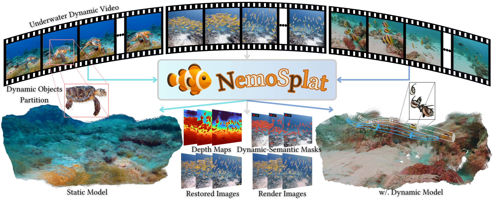
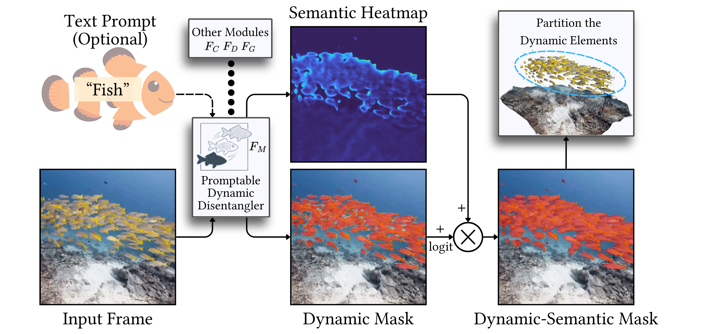
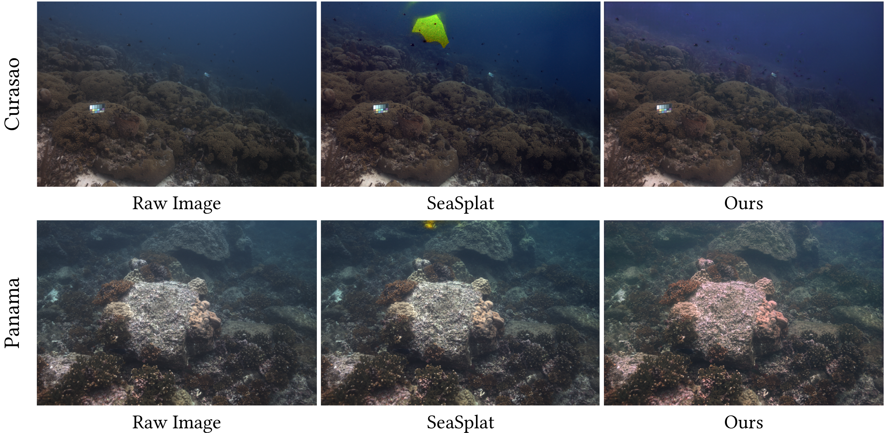
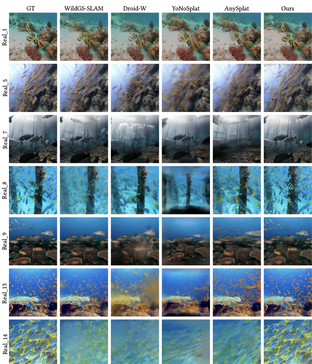
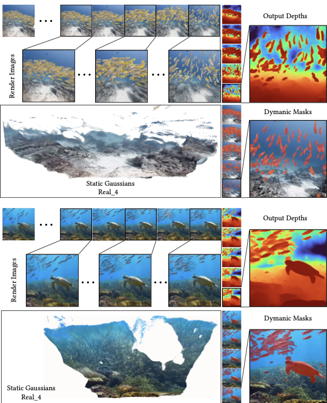
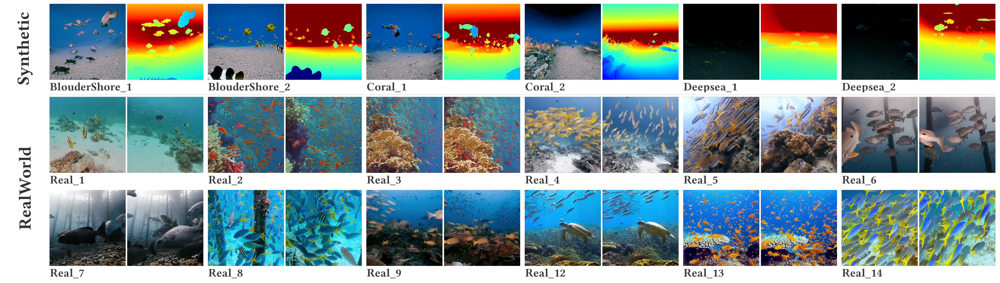

NemoSplat: Feed-Forward 4D Gaussian Splatting for Media-Aware Underwater Reconstruction

We present NemoSplat, a novel feed-forward model that directly reconstructs photorealistic underwater scenes from uncalibrated image sequences, robustly handling numerous dynamic objects and water-induced degradation.
Abstract
Reconstructing photorealistic scenes in unconstrained underwater environments remains challenging due to severe media-induced light scattering and unpredictable dynamic objects. Recent feed-forward visual foundation models have demonstrated remarkable capabilities in generalized novel view synthesis and tracking. However, when directly applied to aquatic videos, optical attenuation and motion interference fatally corrupt their feature aggregation, leading to severe tracking and reconstruction failures. To overcome these limitations, we present NemoSplat, the first feed-forward 4D Gaussian Splatting framework tailored for media-aware dynamic reconstruction directly from uncalibrated marine videos. Beyond providing robust estimations of camera poses and dense scene depth, we devise a Promptable Dynamic Disentangler that utilizes a confidence-aware fusion strategy of learned dynamic probabilities and optional semantic text priors, effectively isolating massive transient entities. Furthermore, to counteract visual degradation, a Media-Aware Gaussian Predictor is formulated to jointly estimate intrinsic 3D Gaussian attributes alongside physical media parameters, rendering pristine scene appearance in a single forward pass. Additionally, we introduce a large-scale underwater dataset with massive dynamic elements to facilitate training and evaluation. Extensive experiments on our dataset demonstrate that NemoSplat achieves state-of-the-art tracking accuracy and high-fidelity rendering.
Method Overview
Given uncalibrated marine videos, NemoSplat integrates geometry prediction, dynamic-static separation and physical media restoration into a single forward pass. The model leverages a Streaming Geometry Transformer (DINOv2 tokenizer + 24-layer causal alternating attention) to extract robust spatiotemporal features. A shared feature encoder feeds specialized decoder heads to jointly estimate camera poses, dense depth, dynamic masks, water medium parameters, and intrinsic 4D Gaussians.

Overview of the NemoSplat framework: camera pose & depth heads anchor the geometry; the Promptable Dynamic Disentangler separates moving objects; the Media-Aware Gaussian Predictor jointly estimates 3D Gaussian attributes and physical water parameters (attenuation βD, backscatter βB, veiling light B∞).
Promptable Dynamic Disentangler
To explicitly decouple moving entities from the background, NemoSplat predicts a dynamic probability map and a background water mask. Optionally, a user-provided text prompt (e.g., “fish”) is encoded via CLIP and fused with the geometric prediction through a confidence-aware logit adjustment, producing a refined dynamic mask without destroying object boundary cohesion. Without a prompt, the network functions as a fully automatic dynamic-static separator.

Dynamic-Semantic Mask Generation: the Promptable Dynamic Disentangler refines the predicted dynamic mask via logit adjustment using an optional text prompt-guided semantic map.
Media-Aware Gaussian Predictor
A unified Gaussian head densely regresses standard 3DGS attributes (opacity, scale, rotation, spherical-harmonic color) for each pixel-unprojected primitive, and simultaneously predicts the physical water medium parameters of the underwater image formation model: Îobs = JGS ⊙ e−βDD + B∞ ⊙ (1 − e−βBD). Training is regularized by multi-view consistency, veiling-light and Jerlov water-type physical constraints, restoring pristine appearance in a single forward pass — no per-scene optimization.

Restored images on the SeaThru-NeRF dataset. NemoSplat recovers more natural colors and clearer distant structures in <10 seconds per scene, while the optimization-based SeaSplat takes ~6 minutes.
Experiments
We compare NemoSplat with six state-of-the-art baselines spanning feed-forward foundation models (VGGT, StreamVGGT), feed-forward 3DGS (YoNoSplat, AnySplat), and optimization-based dynamic GS-SLAM systems (Droid-W, WildGS-SLAM) on our synthetic benchmark (BoulderShore / Coral / Deepsea) and 14 real-world aquatic sequences.
Synthetic sequences: tracking (ATE, m) and rendering (PSNR / SSIM / LPIPS)
| Method | BoulderShore | Coral | Deepsea | Average | ||||||||||||
|---|---|---|---|---|---|---|---|---|---|---|---|---|---|---|---|---|
| ATE↓ | PSNR↑ | SSIM↑ | LPIPS↓ | ATE↓ | PSNR↑ | SSIM↑ | LPIPS↓ | ATE↓ | PSNR↑ | SSIM↑ | LPIPS↓ | ATE↓ | PSNR↑ | SSIM↑ | LPIPS↓ | |
| VGGT | 0.19 | - | - | - | 0.23 | - | - | - | 5.93 | - | - | - | 2.12 | - | - | - |
| StreamVGGT | 0.40 | - | - | - | 0.79 | - | - | - | 5.01 | - | - | - | 2.06 | - | - | - |
| WildGS-SLAM | 0.12 | 18.80 | 0.60 | 0.45 | 4.97 | 17.01 | 0.55 | 0.52 | 0.81 | 29.86 | 0.81 | 0.35 | 1.96 | 21.89 | 0.65 | 0.44 |
| Droid-W | 0.11 | 20.04 | 0.71 | 0.44 | 4.65 | 18.56 | 0.58 | 0.56 | 0.78 | 31.93 | 0.83 | 0.30 | 1.85 | 23.51 | 0.71 | 0.43 |
| YoNoSplat | 0.39 | 17.81 | 0.46 | 0.55 | 0.27 | 17.63 | 0.44 | 0.56 | × (OOM) | × | ||||||
| AnySplat | 0.54 | 20.05 | 0.56 | 0.38 | 2.59 | 20.98 | 0.52 | 0.38 | 5.78 | 24.24 | 0.41 | 0.40 | 2.97 | 21.76 | 0.50 | 0.39 |
| Ours | 0.24 | 21.71 | 0.57 | 0.31 | 0.54 | 20.41 | 0.56 | 0.37 | 4.85 | 29.83 | 0.55 | 0.41 | 1.88 | 23.98 | 0.56 | 0.36 |
Bold: best. Underlined: second best. “-”: method does not support rendering. ×: out of memory. NemoSplat achieves the best overall PSNR (23.98 dB) and LPIPS (0.36), with a highly competitive average ATE of 1.88 m.
Real-world sequences (14 scenes): average novel view synthesis quality
| Method | PSNR↑ | SSIM↑ | LPIPS↓ |
|---|---|---|---|
| WildGS-SLAM | 19.15 | 0.60 | 0.41 |
| Droid-W | 18.12 | 0.56 | 0.44 |
| YoNoSplat | 15.64 | 0.41 | 0.60 |
| AnySplat | 19.22 | 0.60 | 0.42 |
| Ours | 21.58 | 0.68 | 0.26 |
NemoSplat surpasses all baselines on every metric: +2.36 dB PSNR and +0.08 SSIM over the second-best AnySplat, and a 36.6% relative LPIPS reduction compared to WildGS-SLAM.
Qualitative Comparison
On highly degraded real-world aquatic sequences, conventional feed-forward models and SLAM-based baselines suffer from severe ghosting, topological blurring, and visual artifacts caused by unconstrained dynamic entities (e.g., schools of swimming fish). NemoSplat explicitly decouples transient motion from the static topology, synthesizing crisp, temporally consistent, artifact-free novel views.

Reconstruction Results
NemoSplat disentangles static Gaussian models from dynamic underwater scenes, providing comprehensive outputs including RGB renderings, depth maps, and dynamic masks.

Dataset
We construct a large-scale underwater dataset with 256 training sequences (155K frames) and 20 evaluation scenes. The training corpus spans 9 diverse geographic domains and employs a 13-class taxonomy to systematically capture complex marine life behaviors. Training data includes depth, water, and dynamic masks annotated via a human-refined SAM3 + SAHI pipeline. For evaluation, 6 synthetic UE5 sequences provide precise ground truth.

Example sequences of our proposed evaluation dataset, including synthetic scenes with precise ground-truth annotations and diverse in-the-wild underwater sequences.
Supplementary Video
BibTeX
@article{guo2026nemosplat,
title = {NemoSplat: Feed-Forward 4D Gaussian Splatting for Media-Aware Underwater Reconstruction},
author = {Guo, Xiaopeng and Tse, Wai Chung and Zhu, Yipeng and Zhang, Hanwen and Huang, Huajian and Yeung, Sai-Kit},
journal = {arXiv preprint},
year = {2026}
}